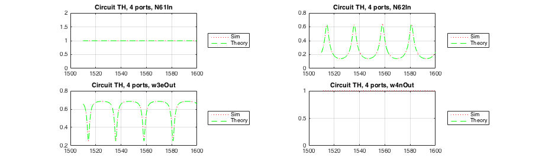

set(0,'DefaultFigureWindowStyle','docked');
set(0,'defaultAxesXGrid','on');
set(0,'defaultAxesYGrid','on');
set(groot,'defaultAxesColorOrder',[1 0 0;0 1 0;0 0 1;1 1 0],'defaultAxesLineStyleOrder',{'--',':'});
set(0,'DefaultLineMarkerSize',1);
base1= 'ringWGXRCross';
outputFile =load('ringWGXRCross.1-DC.2d_dat');
Ref1=0.1;
TH1=0.7;
Right1= 0.15;
Left1= 0.4;
base2= 'ringWGXRCrossIdeal';
outputFileIdeal = load('ringWGXRCrossIdeal.1-DC.2d_dat');
Ref2=0.0;
TH2=1.0;
Right2= 0.0;
Left2= 0.0;
base3= 'ringWGXRCrossTH';
outputFileTH = load('ringWGXRCrossTH.1-DC.2d_dat');
Ref3=0.0;
TH3=0.7;
Right3= 0.0;
Left3= 0.0;
base4= 'ringWGXRCrossRef';
outputFileRef = load('ringWGXRCrossRef.1-DC.2d_dat');
Ref4=0.1;
TH4=0.7;
Right4= 0.0;
Left4= 0.0;
base5= 'ringWGXRCrossRefRight';
outputFileRefRight = load('ringWGXRCrossRefRight.1-DC.2d_dat');
Ref5=0.1;
TH5=0.7;
Right5= 0.15;
Left5= 0.0;
base6= 'ringWGXRCrossRight';
outputFileRight = load('ringWGXRCrossRight.1-DC.2d_dat');
Ref6=0.0;
TH6=0.7;
Right6= 0.3;
Left6= 0.0;
base7= 'ringWGXRCrossLeft';
outputFileLeft = load('ringWGXRCrossLeft.1-DC.2d_dat');
Ref7=0.0;
TH7=0.7;
Right7= 0.0;
Left7= 0.2;
basePath = '/Users/sanam/phd/GitThesis/optics/scripts/matlabSpice/cross/';
x=outputFile(:,1);
N61InTH=10.^(outputFileTH(:,2)./20);
N62InTH=10.^(outputFileTH(:,3)./20);
N63InTH=10.^(outputFileTH(:,4)./20);
N64InTH=10.^(outputFileTH(:,5)./20);
N61OutTH=10.^(outputFileTH(:,6)./20);
N62OutTH=10.^(outputFileTH(:,7)./20);
N63OutTH=10.^(outputFileTH(:,8)./20);
N64OutTH=10.^(outputFileTH(:,9)./20);
w3eOutTH=10.^(outputFileTH(:,20)./20);
w4nOutTH=10.^(outputFileTH(:,21)./20);
N61InTHMag=outputFileTH(:,22);
N61InTHPhi=outputFileTH(:,23);
N62InTHMag=outputFileTH(:,24);
N62InTHPhi=outputFileTH(:,25);
N63OutTHMag=outputFileTH(:,34);
N63OutTHPhi=outputFileTH(:,35);
N61InTHEr= N61InTHMag.*cos(N61InTHPhi);
N61InTHEi= N61InTHMag.*sin(N61InTHPhi);
N62InTHEr= N62InTHMag.*cos(N62InTHPhi);
N62InTHEi= N62InTHMag.*sin(N62InTHPhi);
N63OutTHEr= N63OutTHMag.*cos(N63OutTHPhi);
N63OutTHEi= N63OutTHMag.*sin(N63OutTHPhi);
fTH_TH=N63OutTH.*(N61InTH.^(-1));
fDrop_TH=N62InTH.*(N61InTH.^(-1));
fTH_TH_Mag=N63OutTHMag.*(N61InTHMag.^(-1));
fTH_TH_Phi=N63OutTHPhi-N61InTHPhi;
fDrop_TH_Mag=N62InTHMag.*(N61InTHMag.^(-1));
fDrop_TH_Phi=N62InTHPhi-N61InTHPhi;
N1TH=N61InTH;
N2TH=N62InTH;
N3TH=TH3.*N63OutTH;
N4TH= 0;
fig1=figure('name','Circuit TH, 4 ports','numbertitle','off');
title({'Circuit TH, 4 ports'});
subplot(2,2,1,'Parent',fig1);
plot(x,N61InTH,':r',x,N1TH,'--g');
legend('Sim','Theory','Location','eastoutside');
title('Circuit TH, 4 ports, N61In');
subplot(2,2,2,'Parent',fig1);
plot(x,N62InTH,':r',x,N2TH,'--g');
legend('Sim','Theory','Location','eastoutside');
title('Circuit TH, 4 ports, N62In');
subplot(2,2,3,'Parent',fig1);
plot(x,w3eOutTH,':r',x,N3TH,'--g');
legend('Sim','Theory','Location','eastoutside');
title('Circuit TH, 4 ports, w3eOut');
subplot(2,2,4,'Parent',fig1);
plot(x,w4nOutTH,':r',x,N4TH,'--g');
legend('Sim','Theory','Location','eastoutside');
title('Circuit TH, 4 ports, w4nOut');
figure('name','Circuit TH, Transfer functions','numbertitle','off');
subplot(2,1,1);
plot(x,fTH_TH_Mag,':r',x,fDrop_TH_Mag,'--g');
legend('TH Mag','Drop Mag','Location','eastoutside');
title('Circuit TH, Transfer functions, Mag');
subplot(2,1,2);
plot(x,fTH_TH_Phi,':r',x,fDrop_TH_Phi,'--g');
legend('TH Phi','Drop Phi','Location','eastoutside');
title('Circuit TH, Transfer functions, Phi');
N61InRight=10.^(outputFileRight(:,2)./20);
N62InRight=10.^(outputFileRight(:,3)./20);
N63InRight=10.^(outputFileRight(:,4)./20);
N64InRight=10.^(outputFileRight(:,5)./20);
N61OutRight=10.^(outputFileRight(:,6)./20);
N62OutRight=10.^(outputFileRight(:,7)./20);
N63OutRight=10.^(outputFileRight(:,8)./20);
N64OutRight=10.^(outputFileRight(:,9)./20);
w3eOutRight=10.^(outputFileRight(:,20)./20);
w4nOutRight=10.^(outputFileRight(:,21)./20);
N62InRightMag=outputFileRight(:,24);
N62InRightPhi=outputFileRight(:,25);
N64InRightMag=outputFileRight(:,28);
N64InRightPhi=outputFileRight(:,29);
N63OutRightMag=outputFileRight(:,34);
N63OutRightPhi=outputFileRight(:,35);
N62InRightEr= N62InRightMag.*cos(N62InRightPhi);
N62InRightEi= N62InRightMag.*sin(N62InRightPhi);
N64InRightEr= N64InRightMag.*cos(N64InRightPhi);
N64InRightEi= N64InRightMag.*sin(N64InRightPhi);
N63OutRightEr= N63OutRightMag.*cos(N63OutRightPhi);
N63OutRightEi= N63OutRightMag.*sin(N63OutRightPhi);
N64InRight_fTH= fTH_TH.* N64InRight;
N62InRight_theo1= N62InTH + N64InRight_fTH;
N62InRightEr_theo2= N62InTHEr + fTH_TH.*N64InRightEr;
N62InRightEi_theo2= N62InTHEi + fTH_TH.*N64InRightEi;
N62InRight_theo2 = sqrt(N62InRightEr_theo2.^2 + N62InRightEi_theo2.^2);
N64InRight_fTH_Mag = fTH_TH_Mag.*N64InRightMag;
N64InRight_fTH_Phi = fTH_TH_Phi+N64InRightPhi;
N64InRight_fTH_Er= N64InRight_fTH_Mag.*cos(N64InRight_fTH_Phi);
N64InRight_fTH_Ei= N64InRight_fTH_Mag.*sin(N64InRight_fTH_Phi);
N62InRightEr_theo3= N62InTHEr + N64InRight_fTH_Er;
N62InRightEi_theo3= N62InTHEi + N64InRight_fTH_Ei;
N62InRight_theo3 = sqrt(N62InRightEr_theo3.^2 + N62InRightEi_theo3.^2);
N64InRight_fDrop= fDrop_TH.* N64InRight;
N63OutRight_theo1= N63OutTH + N64InRight_fDrop;
N63OutRightEr_theo2= N63OutTHEr + fDrop_TH.*N64InRightEr;
N63OutRightEi_theo2= N63OutTHEi + fDrop_TH.*N64InRightEi;
N63OutRight_theo2 = sqrt(N63OutRightEr_theo2.^2 + N63OutRightEi_theo2.^2);
N64InRight_fDrop_Mag = fDrop_TH_Mag.*N64InRightMag;
N64InRight_fDrop_Phi = fDrop_TH_Phi+N64InRightPhi;
N64InRight_fDrop_Er= N64InRight_fDrop_Mag.*cos(N64InRight_fDrop_Phi);
N64InRight_fDrop_Ei= N64InRight_fDrop_Mag.*sin(N64InRight_fDrop_Phi);
N63OutRightEr_theo3= N63OutTHEr + N64InRight_fDrop_Er;
N63OutRightEi_theo3= N63OutTHEi + N64InRight_fDrop_Ei;
N63OutRight_theo3 = sqrt(N63OutRightEr_theo3.^2 + N63OutRightEi_theo3.^2);
N1Right=N61InRight;
N2Right=N62InRight_theo3;
N3Right=TH3.*N63OutRight_theo3;
N4Right= 0;
figure('name','Circuit Right, 4 ports','numbertitle','off');
subplot(2,2,1);
plot(x,N61InRight,':r',x,N1Right,'--g');
legend('Sim','Theory','Location','eastoutside');
title('Circuit Right, 4 ports, N61In');
subplot(2,2,2);
plot(x,N62InRight,':r',x,N2Right,'--g',x,N62InRight_theo1,'-.b');
legend('Sim','Theory', 'Thoery without Phase shift','Location','eastoutside');
title('Circuit Right, 4 ports, N62In');
subplot(2,2,3);
plot(x,w3eOutRight,':r',x,N3Right,'--g',x,N63OutRight_theo1,'-.b');
legend('Sim','Theory', 'Thoery without Phase shift','Location','eastoutside');
title('Circuit Right, 4 ports, w3eOut');
subplot(2,2,4);
plot(x,w4nOutRight,':r',x,N4Right,'--g');
legend('Sim','Theory','Location','eastoutside');
title('Circuit Right, 4 ports, w4nOut');
figure('name','Circuit Right, Drop(In dir.)','numbertitle','off');
plot(x,N62InRight,':r',x,N62InRight_theo1,':g',x,N62InRight_theo2,'-.b',x,N62InRight_theo3,'--y');
legend('Sim','theo1','theo2','theo3','Location','eastoutside');
title('Circuit Right, Drop(In dir.)');
figure('name','Circuit Right, Th(Out dir.)','numbertitle','off');
plot(x,N63OutRight,':r',x,N63OutRight_theo1,':g',x,N63OutRight_theo2,'-.b',x,N63OutRight_theo3,'--y');
legend('Sim','theo1','theo2','theo3','Location','eastoutside');
title('Circuit Right, Th(Out dir.)');
